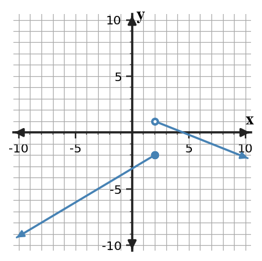

Unit 1.2 · Activity Set 2 · Limits from Graphs and TablesProblem 1
Problem 1
DOK 2
Use the graph to analyze the behavior of $f$ as $x$ approaches $2$.

Graph of $f$ near $x=2$.
Estimate $\lim_{x\to2^-}f(x)$.
Estimate $\lim_{x\to2^+}f(x)$.
Determine whether $\lim_{x\to2}f(x)$ exists and justify your answer.
Unit 1.2 · Activity Set 2 · Limits from Graphs and TablesSolution 1
Solution 1
DOK 2
Use the graph to analyze the behavior of $f$ as $x$ approaches $2$.
Graph of $f$ near $x=2$.
Estimate $\lim_{x\to2^-}f(x)$.
Estimate $\lim_{x\to2^+}f(x)$.
Determine whether $\lim_{x\to2}f(x)$ exists and justify your answer.
Solution: The left-hand limit is $-2$ and the right-hand limit is $1$. Because the one-sided limits are different, the two-sided limit does not exist.
Unit 1.2 · Activity Set 2 · Limits from Graphs and TablesProblem 2
Problem 2
DOK 2
The table records values from both sides of $x=-1$.
$x$
-1.1
-1.01
-0.99
-0.9
$g(x)$
2.9
2.99
5.01
5.1
Estimate the left-hand limit.
Estimate the right-hand limit.
State the two-sided conclusion.
Unit 1.2 · Activity Set 2 · Limits from Graphs and TablesSolution 2
Solution 2
DOK 2
The table records values from both sides of $x=-1$.
$x$
-1.1
-1.01
-0.99
-0.9
$g(x)$
2.9
2.99
5.01
5.1
Estimate the left-hand limit.
Estimate the right-hand limit.
State the two-sided conclusion.
Solution: $\lim_{x\to-1^-}g(x)=3$ and $\lim_{x\to-1^+}g(x)=5$, so $\lim_{x\to-1}g(x)$ does not exist. Rationale: Compare values from inputs on both sides of the target and identify the single output value they approach, rather than relying on the row at the target alone.
Unit 1.2 · Activity Set 2 · Limits from Graphs and TablesProblem 3
Problem 3
DOK 2
The values of $p(x)$ near $x=4$ are shown below.
$x$
3.9
3.99
4.01
4.1
$p(x)$
-2.2
-2.02
-1.98
-1.8
Estimate the two-sided limit.
Explain how the left and right data work together to support the estimate.
Unit 1.2 · Activity Set 2 · Limits from Graphs and TablesSolution 3
Solution 3
DOK 2
The values of $p(x)$ near $x=4$ are shown below.
$x$
3.9
3.99
4.01
4.1
$p(x)$
-2.2
-2.02
-1.98
-1.8
Estimate the two-sided limit.
Explain how the left and right data work together to support the estimate.
Solution: The limit is $-2$. Values from both sides approach $-2$. Rationale: Use the representation or algebraic relationship named in the prompt, show the key intermediate step, and verify that the result answers the exact quantity requested.
Unit 1.2 · Activity Set 2 · Limits from Graphs and TablesProblem 4
Problem 4
DOK 2
Write notation for each statement, then identify whether it is left-hand, right-hand, or two-sided.
As $x$ approaches $3$ from values less than $3$, $f(x)$ approaches $-4$.
As $x$ approaches $3$ from values greater than $3$, $f(x)$ approaches $1$.
Use the two statements to decide whether the two-sided limit exists.
Unit 1.2 · Activity Set 2 · Limits from Graphs and TablesSolution 4
Solution 4
DOK 2
Write notation for each statement, then identify whether it is left-hand, right-hand, or two-sided.
As $x$ approaches $3$ from values less than $3$, $f(x)$ approaches $-4$.
As $x$ approaches $3$ from values greater than $3$, $f(x)$ approaches $1$.
Use the two statements to decide whether the two-sided limit exists.
Solution: $\lim_{x\to3^-}f(x)=-4$ and $\lim_{x\to3^+}f(x)=1$. Since they are unequal, the two-sided limit does not exist. Rationale: Use the representation or algebraic relationship named in the prompt, show the key intermediate step, and verify that the result answers the exact quantity requested.
Unit 1.2 · Activity Set 2 · Limits from Graphs and TablesProblem 5
Problem 5
DOK 2
A graph suggests a left-hand limit of $6$ at $x=0$. A table of values with $x\gt0$ approaches $6$ as well.
What additional statement can now be made about the two-sided limit?
What assumption about the table is necessary for that conclusion?
Explain why agreement of one-sided limits is the key condition.
Unit 1.2 · Activity Set 2 · Limits from Graphs and TablesSolution 5
Solution 5
DOK 2
A graph suggests a left-hand limit of $6$ at $x=0$. A table of values with $x\gt0$ approaches $6$ as well.
What additional statement can now be made about the two-sided limit?
What assumption about the table is necessary for that conclusion?
Explain why agreement of one-sided limits is the key condition.
Solution: If the table represents the same function and truly approaches from the right, then both one-sided limits are $6$, so the two-sided limit is $6$.
Unit 1.2 · Activity Set 2 · Limits from Graphs and TablesProblem 6
Problem 6
DOK 2
A function approaches $-3$ as $x$ approaches $5$, but $f(5)=8$.
Write the limit statement.
State the function value.
Explain why both statements can be true at the same time.
Unit 1.2 · Activity Set 2 · Limits from Graphs and TablesSolution 6
Solution 6
DOK 2
A function approaches $-3$ as $x$ approaches $5$, but $f(5)=8$.
Write the limit statement.
State the function value.
Explain why both statements can be true at the same time.
Solution: $\lim_{x\to5}f(x)=-3$ and $f(5)=8$. Limits describe nearby behavior; the point value may differ. Rationale: Use the representation or algebraic relationship named in the prompt, show the key intermediate step, and verify that the result answers the exact quantity requested.
Unit 1.2 · Activity Set 2 · Limits from Graphs and TablesProblem 7
Problem 7
DOK 2
For $s(t)=t^2+2t$, compute the average rate of change on $[1,4]$.
Show the difference quotient.
Interpret the result as average change in output per unit change in input.
Unit 1.2 · Activity Set 2 · Limits from Graphs and TablesSolution 7
Solution 7
DOK 2
For $s(t)=t^2+2t$, compute the average rate of change on $[1,4]$.
Show the difference quotient.
Interpret the result as average change in output per unit change in input.
Solution: $s(1)=3$, $s(4)=24$, so the average rate is $\frac{24-3}{4-1}=7$. Rationale: Use the change in output divided by the change in input over the stated interval, then simplify with the given endpoint values.
Unit 1.2 · Activity Set 2 · Limits from Graphs and TablesProblem 8
Problem 8
DOK 2
Secant slopes near $x=-2$ are $-1.7,-1.93,-2.06,-2.2$ as the second point moves toward $x=-2$.
Estimate the tangent slope.
Describe what feature of the data makes your estimate reasonable.
Unit 1.2 · Activity Set 2 · Limits from Graphs and TablesSolution 8
Solution 8
DOK 2
Secant slopes near $x=-2$ are $-1.7,-1.93,-2.06,-2.2$ as the second point moves toward $x=-2$.
Estimate the tangent slope.
Describe what feature of the data makes your estimate reasonable.
Solution: The tangent slope is about $-2$ because the secant slopes approach $-2$ from both sides. Rationale: Track the secant-slope values as the interval width shrinks; the value they approach is the limiting instantaneous slope estimate.
Unit 1.2 · Activity Set 2 · Limits from Graphs and TablesProblem 9
Problem 9
DOK 1
Translate into limit notation: the outputs of $q(x)$ approach $9$ as $x$ approaches $-4$.
Write the notation.
Explain what the arrow on $x$ and the resulting number each represent.
Unit 1.2 · Activity Set 2 · Limits from Graphs and TablesSolution 9
Solution 9
DOK 1
Translate into limit notation: the outputs of $q(x)$ approach $9$ as $x$ approaches $-4$.
Write the notation.
Explain what the arrow on $x$ and the resulting number each represent.
Solution: $\lim_{x\to-4}q(x)=9$. The input approaches $-4$ while the output approaches $9$. Rationale: Use the representation or algebraic relationship named in the prompt, show the key intermediate step, and verify that the result answers the exact quantity requested.
Unit 1.2 · Activity Set 2 · Limits from Graphs and TablesProblem 10
Problem 10
DOK 2
A graph has a hole at $(2,5)$ and a filled point at $(2,-1)$, while the curve approaches the hole from both sides.
State the limit.
State the function value.
Explain which point controls each answer.
Unit 1.2 · Activity Set 2 · Limits from Graphs and TablesSolution 10
Solution 10
DOK 2
A graph has a hole at $(2,5)$ and a filled point at $(2,-1)$, while the curve approaches the hole from both sides.
State the limit.
State the function value.
Explain which point controls each answer.
Solution: $\lim_{x\to2}f(x)=5$ and $f(2)=-1$. The nearby curve controls the limit; the filled point controls the function value. Rationale: Read the y-value approached by the curve as x moves toward the target. The plotted value at the target is a separate function-value question.
Unit 1.2 · Activity Set 2 · Limits from Graphs and TablesProblem 11
Problem 11
DOK 2
For $g(x)=\frac{5x+7}{x+3}$:
Evaluate $g(2)$.
State the excluded input from the domain.
Verify that the requested input is allowed.
Unit 1.2 · Activity Set 2 · Limits from Graphs and TablesSolution 11
Solution 11
DOK 2
For $g(x)=\frac{5x+7}{x+3}$:
Evaluate $g(2)$.
State the excluded input from the domain.
Verify that the requested input is allowed.
Solution: $g(2)=\frac{17}{5}$. The excluded input is $x=-3$, so $x=2$ is allowed. Rationale: Apply the expression restrictions: denominators cannot be zero and even-root radicands must be nonnegative; express the allowed inputs in the requested form.
Unit 1.2 · Activity Set 2 · Limits from Graphs and TablesProblem 12
Problem 12
DOK 2
Work with $y=x^2-100$.
Factor the expression completely.
Use the factorization to identify both zeros.
Explain how the zeros appear on the graph.
Unit 1.2 · Activity Set 2 · Limits from Graphs and TablesSolution 12
Solution 12
DOK 2
Work with $y=x^2-100$.
Factor the expression completely.
Use the factorization to identify both zeros.
Explain how the zeros appear on the graph.
Solution: $x^2-100=(x-10)(x+10)$, so the zeros are $x=-10$ and $x=10$. They are the x-intercepts. Rationale: Use the representation or algebraic relationship named in the prompt, show the key intermediate step, and verify that the result answers the exact quantity requested.
Unit 1.2 · Activity Set 2 · Limits from Graphs and TablesProblem 13
Problem 13
DOK 1
Solve $(x-4)(x+9)=0$.
Find both solutions.
Check each solution by identifying which factor becomes zero.
Unit 1.2 · Activity Set 2 · Limits from Graphs and TablesSolution 13
Solution 13
DOK 1
Solve $(x-4)(x+9)=0$.
Find both solutions.
Check each solution by identifying which factor becomes zero.
Solution: The solutions are $x=4$ and $x=-9$. Each solution makes one factor equal to zero. Rationale: Use inverse operations to isolate the unknown and substitute the result back into the original relation as a check.
Unit 1.2 · Activity Set 2 · Limits from Graphs and TablesProblem 14
Problem 14
DOK 2
For $q(x)=x^2+3x$, find the average rate of change on $[3,5]$.
Evaluate both endpoint outputs.
Write and simplify the difference quotient.
Interpret the sign of the result.
Unit 1.2 · Activity Set 2 · Limits from Graphs and TablesSolution 14
Solution 14
DOK 2
For $q(x)=x^2+3x$, find the average rate of change on $[3,5]$.
Evaluate both endpoint outputs.
Write and simplify the difference quotient.
Interpret the sign of the result.
Solution: $q(3)=18$ and $q(5)=40$, so the average rate of change is $11/1$ = 11. The positive value means the output increases on average across the interval.
Unit 1.2 · Activity Set 2 · Limits from Graphs and TablesProblem 15
Problem 15
DOK 2
For $r(x)=\frac{10}{x}$, compute the secant slope from $x=2$ to $x=5$.
Write the average-rate-of-change quotient before simplifying.
Find the slope.
Use the sign to describe the average change.
Unit 1.2 · Activity Set 2 · Limits from Graphs and TablesSolution 15
Solution 15
DOK 2
For $r(x)=\frac{10}{x}$, compute the secant slope from $x=2$ to $x=5$.
Write the average-rate-of-change quotient before simplifying.
Find the slope.
Use the sign to describe the average change.
Solution: The slope is $\frac{10/5-10/2}{3}=-1/1$. The negative sign indicates the function decreases on average over the interval. Rationale: Compute rise over run from the two points, keeping the subtraction order consistent in numerator and denominator.
Unit 1.2 · Activity Set 2 · Limits from Graphs and TablesProblem 16
Problem 16
DOK 1
Evaluate $\log_3 243$.
Rewrite the logarithmic statement as an exponential equation.
Use that equation to justify the value.
Unit 1.2 · Activity Set 2 · Limits from Graphs and TablesSolution 16
Solution 16
DOK 1
Evaluate $\log_3 243$.
Rewrite the logarithmic statement as an exponential equation.
Use that equation to justify the value.
Solution: Since $3^5=243$, $\log_3243=5$. Rationale: Rewrite the logarithmic statement in equivalent exponential form and solve for the exponent.
Unit 1.2 · Activity Set 2 · Limits from Graphs and TablesProblem 17
Problem 17
DOK 1
A piecewise function satisfies $p(x)=-4$ when $x\lt1$ and uses a different rule for $x\ge 1$.
Find $p(-1)$.
Identify the branch used and explain how the inequality selects it.
Unit 1.2 · Activity Set 2 · Limits from Graphs and TablesSolution 17
Solution 17
DOK 1
A piecewise function satisfies $p(x)=-4$ when $x\lt1$ and uses a different rule for $x\ge 1$.
Find $p(-1)$.
Identify the branch used and explain how the inequality selects it.
Solution: Because $-1\lt1$, use the first branch, so $p(-1)=-4$. Rationale: Evaluate the branch that applies on each side of the breakpoint. For continuity, set the one-sided limits and the defined point value equal.
Unit 1.2 · Activity Set 2 · Limits from Graphs and TablesProblem 18
Problem 18
DOK 1
For $h(x)=\frac{x-2}{x-10}$:
State the domain.
Explain which denominator condition creates the restriction.
Unit 1.2 · Activity Set 2 · Limits from Graphs and TablesSolution 18
Solution 18
DOK 1
For $h(x)=\frac{x-2}{x-10}$:
State the domain.
Explain which denominator condition creates the restriction.
Solution: The domain is $\mathbb{R}\setminus\{10\}$ because the denominator is zero at $x=10$. Rationale: Apply the expression restrictions: denominators cannot be zero and even-root radicands must be nonnegative; express the allowed inputs in the requested form.
Unit 1.2 · Activity Set 2 · Limits from Graphs and TablesProblem 19
Problem 19
DOK 2
Let $f(x)=3x+-2$ and $g(x)=2x+4$.
Find $(f\circ g)(1)$.
Show the inner-function value before applying the outer function.
Unit 1.2 · Activity Set 2 · Limits from Graphs and TablesSolution 19
Solution 19
DOK 2
Let $f(x)=3x+-2$ and $g(x)=2x+4$.
Find $(f\circ g)(1)$.
Show the inner-function value before applying the outer function.
Solution: $g(1)=6$, then $f(6)=16$, so $(f\circ g)(1)=16$. Rationale: Substitute the requested value or use the stated relationship, then simplify in a clear sequence so the final value can be checked.
Unit 1.2 · Activity Set 2 · Limits from Graphs and TablesProblem 20
Problem 20
DOK 2
Simplify $\frac{(x+4)(x-7)}{x-7}$.
Simplify for allowed inputs.
State the restriction inherited from the original expression.
Explain why the restriction remains after cancellation.
Unit 1.2 · Activity Set 2 · Limits from Graphs and TablesSolution 20
Solution 20
DOK 2
Simplify $\frac{(x+4)(x-7)}{x-7}$.
Simplify for allowed inputs.
State the restriction inherited from the original expression.
Explain why the restriction remains after cancellation.
Solution: The expression simplifies to $x+4$ for $x\ne7$. The original denominator is zero at $x=7$, so that input remains excluded. Rationale: Apply the relevant algebraic identities, combine like factors or terms, and check that the simplified form is equivalent on the original domain.